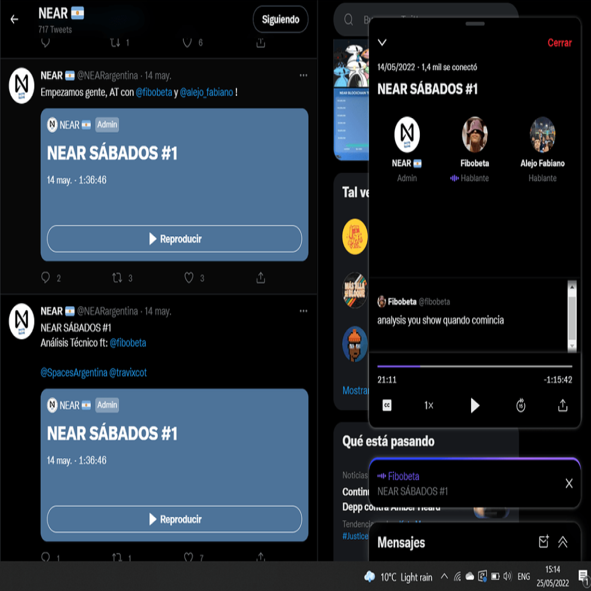
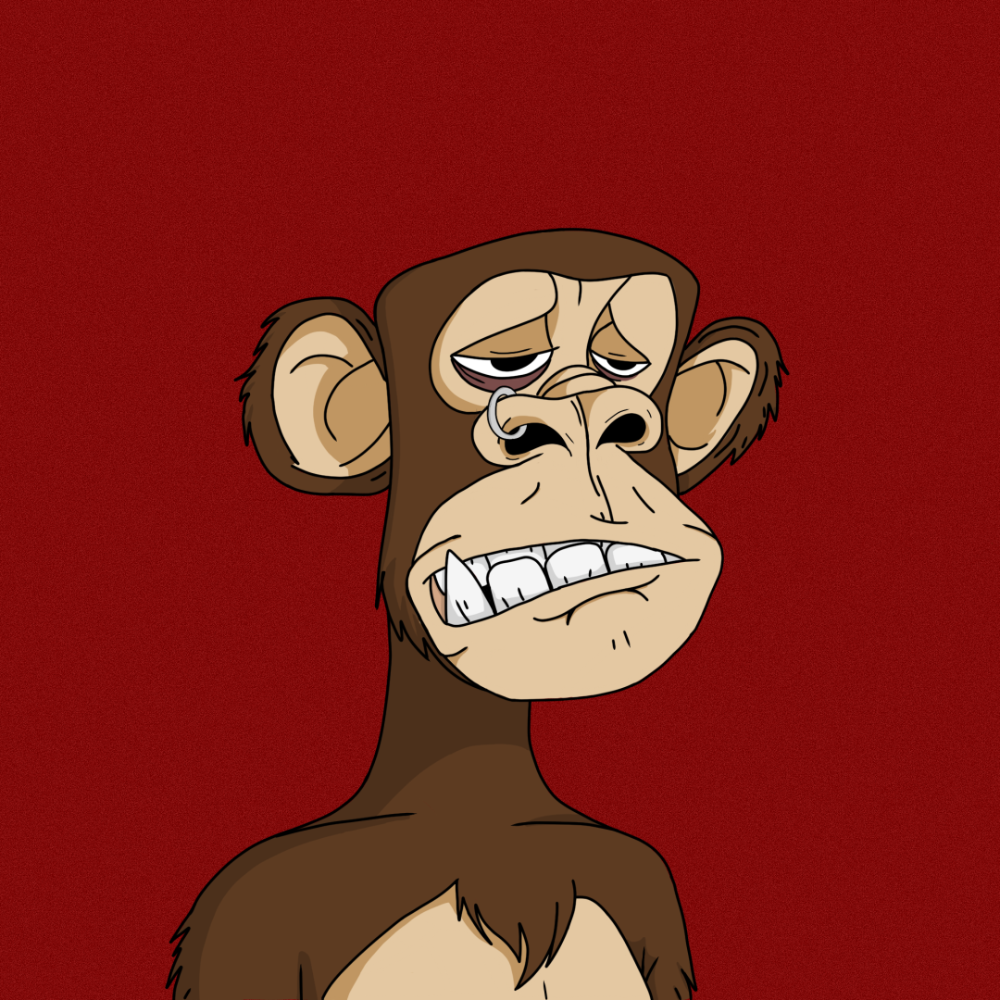

I come from a family of businessmans and businesswomans. Merchants, realtors, and business owners. It was basically inherited in myself right from the moment I grew up. Always looking at my father go to work and talking with providers and different customers was something daily in my life.
At first I actually didn't want to give trading or business a chance. It was a little bit boring for me. But in the end, with my first job as a free agent selling Jewelry by landing my first client, it was enlightening. Maybe part of the "game" or just trying to see profits and an advantage in every transaction made. Maybe it was my family legacy
Whatever it is that brought me to study Economy, I never regret it. It also made me who I am and it made me woke regarding certain political and economic issues in life and how I should face every part of my life. In riches or in debt, in crisis or in the raise. Whatever the situation, I have learned how to handle myself through the economy.
I studied for two years at Siglo 21 University. I didn't finish the main degree since I had to work from a relatively young age, inheriting one of my fathers businesses and learning everything that he did back then. I managed to become the general manager with no problems thanks to the studies that I took, and after that I really didn't want to finish the rest of the career. It was way more entertaining to be there in the moment and learning on the spot.
I did some courses on trading, with "RDItrading" a six months course that tacked on trading itself, it also researched which assets to acquire regarding where you are in the world, which other capitals of interest to export and import, and also it showed me a whole picture of global economy in that moment, around 2017. It was a course only for students of international trade who had completed two years of study already, a technical degree before preparing the last two years of my career. That is exactly where I stopped.
In 2021 and 2022 I studied market analysis, on specific cryptocurrencies. I started trading major capitals such as Bitcoin, Ethereum, Solana, Cardano and other mid and small caps such as Algo, Near, Tezos, Cosmos and more. I made a living out of crypto and participated in plenty of communities building dapps in web3, to end up having my own community, Near Argentina. This is as deep as I went regarding Economy and Finance, and for now I think it does not get as deep as this (in a macroeconomic and macro political way)
Regarding experiences I started working at my family's business Nexo Accesorios. We took part in the jewelry business and my job was to get new clients to buy our merchandise in bulk. They were huge clients that bought large amounts of accesories to start their businesses as well. Here I learned and developed my salesman skills and my marketing skills as well. It was not an easy task to land a client at first when I knew nothing about it.
After that I handled one of the main stores in my city that was in charge of the imports and exports of jewelry and that supplied most of the other small businesses around Cordoba. It was a thrilling experience regarding human skills and learning how to sell what you offer and also it was a booster for me to learn how to handle big books and the accounting of the company. It was a big task as well but I handled it pretty well with lots of organization and planning in separate quarters.
In the beginning of 2020 I wanted to pursue another venture and work abroad, mainly to seek to expand the brand. Of course we all know how that year went. I stopped working at the main store and traveled to Denmark and the United Kingdom. After trying my luck I went back almost with no capital and decided to start a new journey (again).
I invested everything I had into cryptocurrencies and thankfully it went well. It was easy for me since I had those years studying at university and I got the hang of investing pretty quick, also I learned how to trade in every aspect. Short trading, swing trading and investing long term. It was a whole new world for me and I ended up working in Apexit Finance where I learned how to develop the tokenomics of a project and also to launch an NFT project as well. More targeted to communities and finance in itself. It was a great experience overall and it made me want to create my own community
From that experience, in January 2022 Near Argentina was born. I wanted to focus more on community and project management and project development. We started humbly as 30 members in Telegram and around 70 in Twitter to become a huge community of 430 in Telegram and 1400 in Twitter. I had a core team as well who helped me through the entire journey. We got different projects to mainnet such as Blockjobs (job marketplace in web3), Howler Carayas (NFT collection), Maradonears (NFT collection) Regional Hubs, (free Education and Certification in blockchain and for developers), currently we are working on a musical streaming project in Near (I can't give specifics since its not yet on mainnet) and many more
This has been my entire experience regarding entrepreneurship, next things to come will be by the development side since this is where I am currently, but I think that being entrepreneur is something you are born with and something that with hard work you can become. But once you have that entrepreneurial soul, you live your whole life like it, it never goes away.